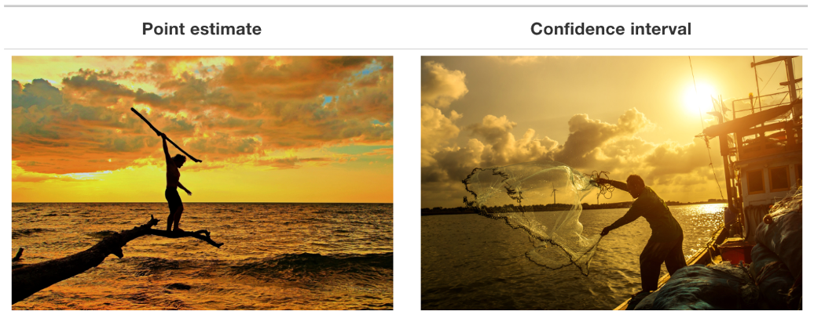
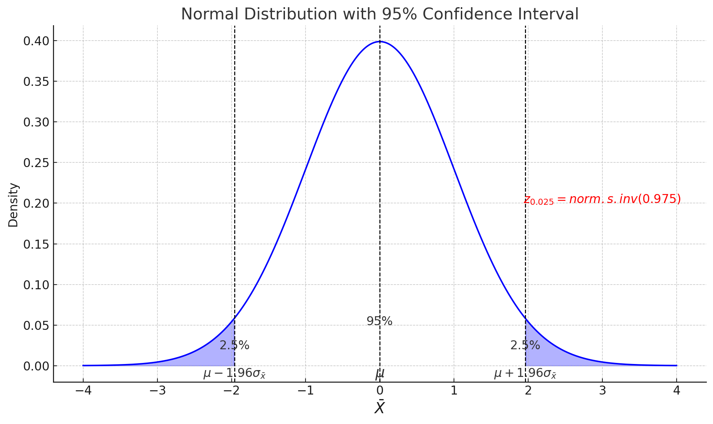
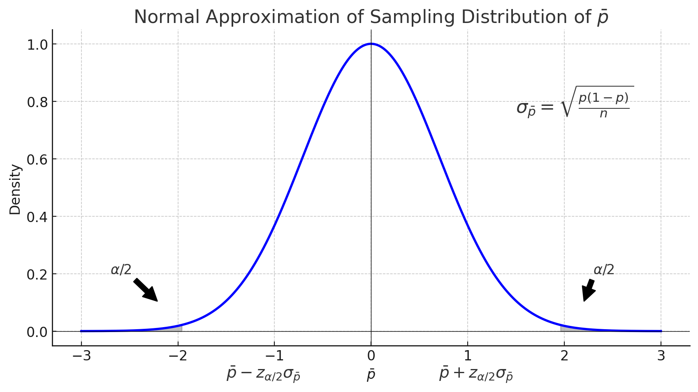
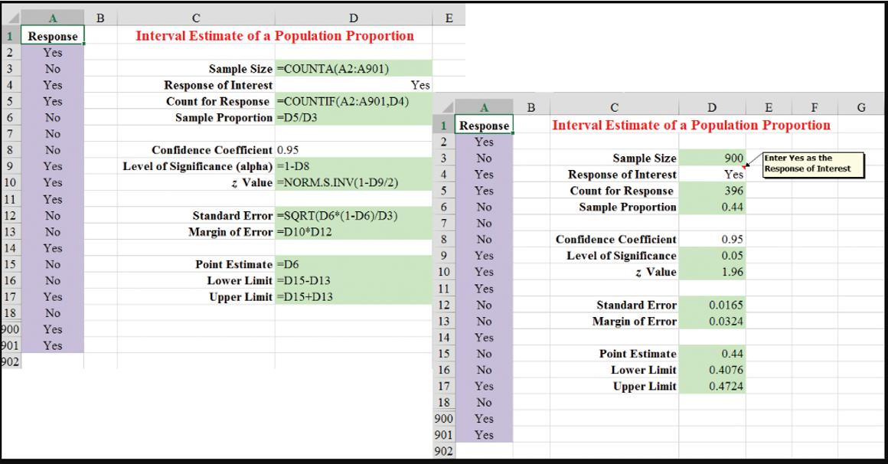

MGMT 30500: Business Statistics
Int. Est. Rvw.
Overview
- Statistical Inference
- Central Limit Theorem
- Population Mean: \(\sigma\) Known
- Population Mean: \(\sigma\) Unknown
- Population Proportion
- Sample Size Determination
Interval Estimation
Statistical Inference
Statistical Inference
- Confidence level: 95% \((1-\alpha)\) (Middle area; Confidence level)
- Confidence multipliers
- Upper/lower tail areas
- One- or 2-sided intervals
- Sampling errors and Margin of Error (MOE)
- Find range of all reasonable parameter values
- Significance level: 5% \((\alpha)\) (Tail area(s); Risk)
- Critical values
- p-values
- Which side \((H_a)\) depends mostly on data
- Strength of sample evidence against the hypothesized value (via p-value)
- Test a specific hypothesized parameter value
Interval Estimate and Margin of Error
Parameter Estimation
We are often interested in population parameters.
Since complete populations are difficult (or impossible) to collect data on, we use sample statistics as point estimates for the unknown population parameters of interest.
Sample statistics vary from sample to sample.
Quantifying how sample statistics vary provides a way to estimate the margin of error associated with our point estimate.
Suppose we randomly sample 1,000 adults from each state in the US. Would you expect the sample means of their heights to be the same, somewhat different, or very different?
Not the same, but only somewhat different.
Interval Estimate and Margin of Error
A plausible range of values for the population parameter is called a confidence interval.
Using only a sample statistic to estimate a parameter is like fishing in a murky lake with a spear, and using a confidence interval is like fishing with a net.
Central Limit Theorem
Seeing Theory
https://seeing-theory.brown.edu/
Bunnies, Dragons and the ‘Normal’ World: Central Limit Theorem | The New York Times
Interval Estimate and Margin of Error
A point estimator cannot be expected to provide the exact value of the population parameter with a given level of confidence; but it is a good starting point to construct an interval estimate.
An interval estimate for mean can be computed by adding and subtracting a margin of error (MOE) to the point estimate.
\[ \text{Point Estimate} \pm \text{Margin of Error} \]
The purpose of an interval estimate is to provide information about how close the point estimate is to the true value of the unknown population parameter with a certain level of confidence.
Interval Estimate and Margin of Error

Simulation
Interval Estimate of a Population Mean
In order to develop an interval estimate of a population mean, the margin of error (the maximum error due to sampling in order to control the confidence level) must be computed using either:
- the population standard deviation \(\sigma\) (if known), or
- the sample standard deviation \(s\)
\(\sigma\) is rarely known exactly, but often a good estimate can be obtained based on historical data or other information.
We refer to such cases as the \(\sigma\) known case.
Margin of Error and the Interval Estimate
The general form of an interval estimate of a population mean is
\[ \bar{X} \pm \text{Margin of Error} \]
The Margin of Error (MOE) depends on the sampling distribution (sampling variation) of the point estimate \(\bar{X}\).
Sampling Distribution of \(\bar{X}\)

It will be symmetric if:
- \(n\) is large (Central Limit Teorem) or
- Population of \(X\) is normal
Interval Estimate of a Population Mean: \(\sigma\) Known
Interval Estimate of a Population Mean: \(\sigma\) Known
- When the population standard deviation (\(\sigma\)) is known, we can compute a 95% confidence that the population parameter \((\mu)\) will fall within \(1.96 \times \sigma_{\bar{X}}\) from the \(\bar{X}\); i.e., \(\mu\) is in the following interval
\[ \bar{X} \pm 1.96 \frac{\sigma}{\sqrt{n}} \]
When the quantities are replaced by numbers, the interval is called a 95% confidence interval for \(\mu\).
95% is called the confidence level (\(= 1- \alpha\)). What means that \(\alpha = 0.05\).
1.96 is referred to as the 95% z-confidence multiplier, denoted by \(z_{0.025}\) (or \(z_{\alpha/2}\)). This value represents the number of standard deviations one must move from the mean in both directions to capture the central 95% of the standard normal distribution, thereby defining the 95% confidence interval.
\(\frac{\sigma}{\sqrt{n}}\) Standard Error of the Mean
Confidence Multipliers
Values of \(Z_{\alpha/2}\) for the Most Commonly Used Confidence Levels
| Confidence level | \(\alpha\) | \(\alpha/2\) | \(Z_{\alpha/2}\) |
|---|---|---|---|
| 90% | 0.1 | 0.05 | 1.645 |
| 95% | 0.05 | 0.025 | 1.960 |
| 99% | 0.01 | 0.005 | 2.576 |
Excel: \(= \text{norm.s.inv}(1 - \alpha/2)\)
Interval Estimate of a Population Mean: \(\sigma\) Unknown
Interval Estimate of a Population Mean: \(\sigma\) Unknown
When \(\sigma\) of a normal population is unknown, it is replaced by the sample standard deviation \(S\) and the distribution involved will be a \(t\)-distribution.
The degrees of freedom of the \(t\)-distribution is the sample size minus 1 (i.e., \(n-1\)).
The \(1 - \alpha\) confidence multiplier is \(t_{\alpha/2, n-1}\)
Excel: = T.INV(1-\(\alpha\)/2, \(n-1\)).
Interval Estimate of a Population Mean: \(\sigma\) Unknown
This formula is used to construct a confidence interval for the population mean when the population standard deviation is unknown and the sample size is relatively small.
\[ \bar{X} \pm t_{\alpha/2, n-1} \times \frac{s}{\sqrt{n}} \]
\(\bar{X}\): The sample mean, which serves as the point estimate of the population mean.
\(t_{\alpha/2, n-1}\): The t-value for the chosen confidence level with \(n-1\) degrees of freedom. It represents the number of standard deviations (from the t-distribution) needed to capture the central \((1-\alpha)\%\) of the data.
\(s\): The sample standard deviation, which measures the amount of variation or dispersion in the sample.
\(n\): The sample size, representing the number of observations in the sample.
\(\frac{s}{\sqrt{n}}\): The standard error of the mean, which estimates the standard deviation of the sampling distribution of the sample mean.
Interval Estimate of a Population Mean: \(\sigma\) Unknown - Example
Example: Credit card debt for the population of US households
The credit card balances of a sample of 70 households provided a mean credit card debt of $9,312 with a sample standard deviation of $4,007.
Let us provide a 95% confidence interval estimate of the mean credit card debt for the population of US households. We will assume this population to be normally distributed.
Interval Estimate of a Population Mean: \(\sigma\) Unknown - Example
\[ \bar{x} \pm t_{.025, 69} \times \frac{s}{\sqrt{n}} \]
\[ \bar{x} \pm =T.INV(1-0.025,69) \times \frac{s}{\sqrt{n}} \]
\[ 9,312 \pm 1.995 \times \frac{4007}{\sqrt{70}} = 9,312 \pm 955 = (8,357,10,267) \]
We are 95% confident that the mean credit card debt for the entire population of U.S. households is between $8,357 and $10,267. The margin of error (maximum error) of the sample mean (as an estimate of the unknown population mean) is $955.
Interval Estimate of a Population Mean: \(\sigma\) Unknown - Example
Adequate Sample Size
Usually, a sample size of \(n \geq 30\) is adequate when using the expression
\[ \bar{x} \pm t_{\alpha/2} \frac{s}{\sqrt{n}} \]
to develop an interval estimate of a population mean \(\mu\).
- If the population distribution is highly skewed or contains outliers, a sample size of 50 or more is recommended.
- If the population is not normally distributed but is roughly symmetric, a sample size as small as 15 will suffice.
- If the population is believed to be at least approximately normal, a sample size of less than 15 can be used.
Interval Estimate of a Population Proportion
Interval Estimate of a Population Proportion
The general form of an interval estimate of a population proportion is:
\[ \bar{p} \pm \text{Margin of Error} \]
where \(\bar{p}\) is the sample proportion of the event of interest.
Interval Estimate of a Population Proportion
The sampling distribution of \(\bar{p}\) plays a key role in computing the margin of error for this interval estimate.
The sampling distribution of \(\bar{p}\) can be approximated by a normal distribution whenever \(np \geq 5\) and \(n(1-p) \geq 5\).This is known as success failure condition.
Unlike the population mean, there is no \(t\)-distribution in this case.
Interval Estimate of a Population Proportion

Interval Estimate of a Population Proportion
This formula is used to construct a confidence interval for the population proportion.
\[ \bar{p} \pm z_{\alpha/2} \times \sqrt{\frac{\bar{p}(1 - \bar{p})}{n}} \]
- \(\bar{p}\): The sample proportion, which serves as the point estimate of the population proportion.
- \(z_{\alpha/2}\): The z-value for the chosen confidence level. It represents the number of standard deviations (from the standard normal distribution) needed to capture the central \((1-\alpha)\%\) of the data.
- \(\sqrt{\frac{\bar{p}(1 - \bar{p})}{n}}\): The standard error of the proportion, which estimates the standard deviation of the sampling distribution of the sample proportion.
- \(\bar{p}(1 - \bar{p})\): The variance of the sample proportion.
- \(n\): The sample size, representing the number of observations in the sample.
Interval Estimate of a Population Proportion - Example
Example: Survey of women golfers
A national survey of 900 women golfers was conducted to learn how women golfers view their treatment at golf courses in United States. The survey found that 396 of the women golfers were satisfied with the availability of tee times.
Suppose one wants to develop a 95% confidence interval estimate for the proportion of the population of women golfers satisfied with the availability of tee times.
Interval Estimate of a Population Proportion - Example
\[ \bar{p} \pm z_{\alpha/2} \times \sqrt{\frac{\bar{p}(1 - \bar{p})}{n}} \]
where:
- \(n = 900\),
- \(\bar{p} = \frac{396}{900} = 0.44\),
- \(z_{\alpha/2} = 1.96\)
\[ 0.44 \pm 1.96 \times \sqrt{\frac{0.44(1 - 0.44)}{900}} = 0.44 \pm 0.0324 \]
Survey results enable us to state with 95% confidence that between 40.76% and 47.24% of all women golfers are satisfied with the availability of tee times.
Interval Estimate of a Population Proportion - Excel Example

Sample Size for an Interval Estimate of a Population Proportion
Sample Size for an Interval Estimate of a Population Proportion
Margin of Error
\[ E = z_{\alpha/2} \times \sqrt{\frac{\bar{p}(1-\bar{p})}{n}} \]
Solving for the necessary sample size \(n\), we get:
\[ n = \left( \frac{z_{\alpha/2}^2 \times \bar{p}(1-\bar{p})}{E^2} \right) \]
However, \(\bar{p}\) will not be known until after we have selected the sample. We can use the planning value \(p^*\) for \(\bar{p}\).
Sample Size for an Interval Estimate of a Population Proportion
Necessary Sample Size:
\[ n = \left( \frac{z_{\alpha/2}^2 \times p^*(1-p^*)}{E^2} \right) \]
The planning value \(p^*\) can be chosen by one of the following procedures:
Previous Studies: Use the sample proportion from a previous study or similar survey as \(p^*\).
Pilot Study: Conduct a preliminary survey and use the sample proportion from that study as \(p^*\).
Best Guess: Use a judgment or “best guess” based on available information or expert opinion.
Conservative Approach: If no prior information is available, use \(p^* = 0.5\) as it maximizes the sample size and provides the most conservative estimate. This is because the product \(p^*(1 - p^*)\) is maximized when \(p^* = 0.5\).
Sample Size for an Interval Estimate of a Population Proportion - Example
Example: Survey of women golfers
A national survey of 900 women golfers was conducted to learn how women golfers view their treatment at golf courses in United States. The survey found that 396 of the women golfers were satisfied with the availability of tee times.
Let us provide a 95% confidence interval estimate of the mean credit card debt for the population of US households. We will assume this population to be normally distributed.
Sample Size for an Interval Estimate of a Population Proportion - Example
Calculations:
\[ E = z_{\alpha/2} \times \sqrt{\frac{p^*(1-p^*)}{n}} = .025 \]
At 95% confidence \(z_{0.0125} = 1.96\). Assume \(p^* = 0.44\).
\[ n = \left( \frac{z_{\alpha/2}^2 \times p^*(1-p^*)}{E^2} \right) = \left( \frac{(1.96)^2 (0.44)(0.56)}{(0.025)^2} \right) = 1,514.5 \]
Conclusion: A sample of size 1,515 is needed to reach a desired precision of \(\pm\) 0.025 at 95% confidence.
Sample Size for an Interval Estimate of a Population Proportion - Example
We used 0.44 as the best estimate of \(p\) in the preceding expression.
If no information is available about \(p\), then 0.5 is often assumed because it provides the highest possible (conservative) sample size.
If we had used \(p = 0.5\), the recommended \(n\) would have been 1537.
Concepts
Concepts
| Concept | Definition | Purpose |
|---|---|---|
| Standard Deviation | A measure of the amount of variation or dispersion in a set of values. | To quantify the dispersion of data points around the mean. |
| Standard Error | The standard deviation of the sample distribution of a statistic (e.g. the sample mean). | To estimate how much sample statistics will vary from the true population parameter. |
| Margin of Error | A measure of the range within which the true population parameter is expected to lie, with a given level of confidence. | To quantify the uncertainty in estimates of population parameters. |
| Confidence Level | The probability that if a random sample were taken and a confidence interval calculated, that interval would contain the true population parameter. | To indicate the degree of confidence that the interval contains the true parameter. |
| Confidence Interval | An interval estimate of a population parameter that provides an estimated range of values which is likely to include an unknown population parameter. | To provide a range in which we are fairly confident the true population parameter lies. |
Summary
Summary
Check assumptions.
- Randomization
- Independence
- The sampling distribution of \(\bar{p}\) is approximately normal. (
- Check \(n\bar{p} \geq 5\) and \(n(1 - \bar{p}) \geq 5\).
Calculate the standard error of \(\bar{p}\): \[ se = \sqrt{\frac{\bar{p}(1 - \bar{p})}{n}} \]
Identify \(z\) for your specified level of confidence.
Calculate the interval: \[ \bar{p} \pm z \times se \]
Check assumptions.
- Randomization
- Independence
- The sampling distribution of \(\bar{x}\) is approximately normal.
- Check \(n \geq 30\) or underlying population distribution normal.
Calculate the standard error of \(\bar{x}\): \[ se = \frac{s}{\sqrt{n}} \]
Identify \(t\) for your specified level of confidence \[ (df = n - 1) \]
Calculate the interval: \[ \bar{x} \pm t \times se \]
Summary
Some key takeaways from this session:
Statistical Inference:
Involves using sample data to make generalizations about a population. It includes methods like interval estimation and hypothesis testing to draw conclusions with a certain level of confidence.
Central Limit Theorem:
States that the distribution of the sample mean will approximate a normal distribution as the sample size becomes large, regardless of the population’s distribution. This theorem underpins many inferential statistics techniques.
Interval Estimation:
Provides a range of values (confidence interval) for an unknown population parameter, giving an estimate along with an associated margin of error to quantify the uncertainty.
Summary
Some key takeaways from this session:
Population Mean (\(\sigma\) Known):
When the population standard deviation is known, a z-distribution is used to construct confidence intervals for the population mean.
Population Mean (\(\sigma\) Unknown):
When the population standard deviation is unknown, a t-distribution is used. This is common in practical applications where the sample standard deviation serves as an estimate for the population standard deviation.
Population Proportion:
Involves estimating the proportion of a population that possesses a certain characteristic. Confidence intervals for population proportions can be calculated using the sample proportion and its standard error.
Sample Size Determination:
Important for ensuring that estimates are accurate and reliable. The required sample size can be calculated based on desired margin of error, confidence level, and variability in the population.